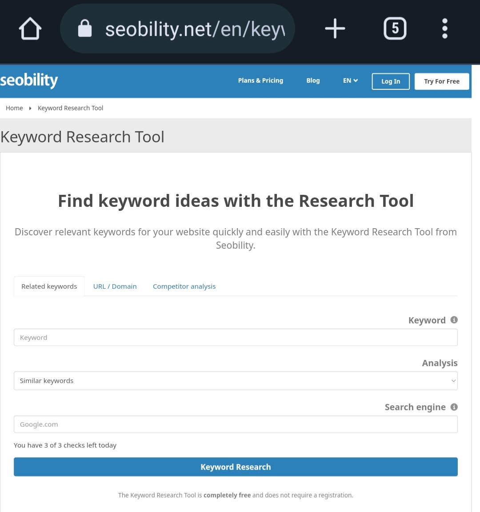

Seobility Free Keywords Research Tool
Keywords research is a crucial aspect of search engine optimization (SEO) as it helps you understand the terms and phrases people use to search for information online. Seobility offers a free and powerful keywords research tool that does not require registration and can assist you in finding the right keywords to optimize your website's content and improve its visibility in search engine results. You get three free keyword searchs if you have not made an account with them.You get two more when you have an account with Seobility .
why use Seoabilty ?
With Seobility's free keywords research tool you can:
- Identify Relevant Keywords
- You can identify Similar keywords that are related to the term you entered
- Questions related to the keyword that are frequently asked by search engine users
- Related searches that Google displays in its search results
- Auto complete searches suggested by Google as the term is being typed in
- Related terms from the same broad category as the keyword entered
- Gain Insights into Search Volume
- Analyze Competition Levels
- Access Cost-Per-Click (CPC) Data
- Refine Keyword Research with Filters
- Export and Save Keywords for Future Use
How to use Seobility's free keywords research tool:
Step 1: Access Seobility's Free Keywords Research Tool
Visit Seobility's website and navigate to their free tools section. Look for the "Keywords Research" tool, and click on it to access the tool.
Step 2: Enter Your Keyword or Topic
In the search bar provided, enter the keyword or topic you want to research. You can use long tail keywords or short tail keywords For example, if you have a website about Farming, you might enter "farming" as your keyword.
Step 3: Select Your Target Country and Language
Choose the country and language for which you want to perform keyword research. This step helps you identify keywords that are specific to your target audience.For example, google.co ke for Kenya. Google.co.uk for United Kingdom
Step 4: Analyze the Results
Once you click on the "Search" button, Seobility will generate a list of relevant keywords related to your search query. The tool provides valuable information such as search volume, competition level, and cost-per-click (CPC) data.
Step 5: Refine Your Search
Explore the list of keywords provided by Seobility and identify the ones that align with your website's goals and target audience. You can refine your search by applying filters based on search volume, competition level, and CPC.
Step 6: Export and Save Your Keywords
Once you've identified the keywords you want to use, you can export the list in various formats, such as CSV or XLSX, by clicking on the "Export" button. Saving the keywords allows you to reference them later and integrate them into your SEO strategy.
Step 7: Implement Keywords in Your Content
With your list of targeted keywords in hand, you can start incorporating them into your website's content. Focus on creating high-quality, informative, and engaging content that seamlessly integrates the keywords in a natural manner.